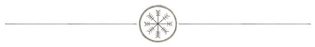

Mitglied werden
Out of Character (OT) – Unser Leitfaden für den Umgang untereinander
Achtung - kein
Abo - keine mitgiedsbeiträge
Bei Grimsbane stehen Freundlichkeit, Respekt und Zusammenhalt an erster Stelle. Wir sind eine kleine Gruppe, aber jede Stimme zählt und jede Meinung wird gehört.
- Respekt & Freundlichkeit: Wir behandeln einander fair, hören zu und nehmen uns ernst. Beleidigungen, Mobbing oder Ausgrenzung haben keinen Platz.
- Verlässlichkeit & Engagement: Absprachen und Termine werden eingehalten, damit wir alle aufeinander bauen können.
- Kreativität & Mitgestaltung: Jede Idee ist willkommen – sei es für Gildenaktivitäten, Rollenspiel-Ideen oder die Gestaltung unserer Welt.
- Offenheit & Kommunikation: Probleme sprechen wir direkt und konstruktiv an. Wir hören zu und suchen gemeinsam Lösungen.
- Wachstum & Zusammenhalt: Auch wenn wir klein anfangen, wollen wir gemeinsam wachsen. Jede*r trägt dazu bei, dass Grimsbane ein lebendiger Ort wird.

In Character (IC) – Unsere
Philosophie im Spiel
Im Spiel lebt Grimsbane von Zusammenhalt, Abenteuerlust und kreativem Rollenspiel. Unsere Charaktere handeln nach gemeinsamen Werten und gestalten Geschichten gemeinsam.
-
Gemeinschaft & Loyalität: Charaktere unterstützen einander, teilen Wissen und Ressourcen und stehen füreinander ein.
-
Abenteuergeist & Mut: Wir scheuen keine Herausforderung, lernen aus Fehlern und wachsen gemeinsam durch Erlebnisse.
-
Kreativität & Tiefe: Jeder Charakter hat Persönlichkeit, Geschichte und Entwicklung – wir spielen nicht nur Mechaniken, wir erzählen Geschichten.
-
Story & Immersion: Wir gestalten die Welt zusammen, respektieren die Handlungen anderer und schaffen ein lebendiges Rollenspielerlebnis
Kontakt für neue Mitglieder
Bei Fragen wende dich direkt an unsere Ansprechpartner:
Admins: galadoriath@gmail.com